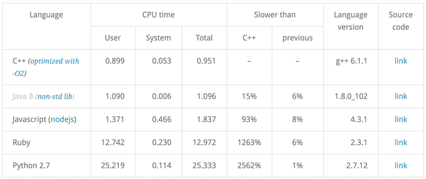

Jared Szechy
require 'mkmf'
create_makefile 'hello_ext'
$ ruby extconf.rb
creating Makefile
$ touch hello.c
$ make
compiling hello.c
linking shared-object hello_ext.bundle
irb(main):001:0> require_relative 'hello_ext'
Traceback (most recent call last):
5: from ruby/2.7.1/bin/irb:23:in `<main>'
4: from ruby/2.7.1/bin/irb:23:in `load'
3: from ruby/2.7.1/lib/ruby/gems/2.7.0/gems/irb-1.2.3/exe/irb:11:in `<top (required)>'
2: from (irb):1
1: from (irb):1:in `require_relative'
LoadError (dlsym(0x7fcdc392ca70, Init_hello_ext): symbol not found - hello/hello_ext.bundle)
Init_[ext_name] function
void Init_hello_ext()
{
// TODO: Define things here
}
irb(main):001:0> require_relative 'hello_ext'
=> true
#include <ruby.h>
#include <stdio.h>
static VALUE method_hello_world(VALUE self)
{
printf("Hello, World!\n");
return Qnil;
}
VALUE
void Init_hello_ext()
{
VALUE hello = rb_define_module("HelloExt");
rb_define_singleton_method(hello, "hello_world", method_hello_world, 0);
}
#include <ruby.h>
#include <stdio.h>
static VALUE method_hello_world(VALUE self)
{
printf("Hello, World!\n");
return Qnil;
}
void Init_hello_ext()
{
VALUE hello = rb_define_module("HelloExt");
rb_define_singleton_method(hello, "hello_world", method_hello_world, 0);
}
$ make
compiling hello.c
linking shared-object hello_ext.so
irb(main):001:0> require_relative 'hello_ext'
=> true
irb(main):002:0> HelloExt.hello_world
Hello, World!
=> nil
Benchmark.ips do |x|
x.report('ext') { HelloExt.hello_world }
x.report('puts') { puts 'Hello, World!' }
x.compare!
end
Comparison:
ext: 210489.3 i/s
puts: 174990.8 i/s - same-ish: difference falls within error
Use existing benchmark work from Ivan Zahariev

module Primes
def self.get_primes7(n)
return [] if n < 2
return [2] if n == 2
s = 3.upto(n + 1).select(&:odd?)
mroot = n**0.5
half = s.length
i = 0
m = 3
until m > mroot
if s[i]
j = (m * m - 3) / 2
s[j] = nil
until j >= half
s[j] = nil
j += m
end
end
i += 1
m = 2 * i + 3
end
[2] + s.compact
end
end
#include <cstdio>
#include <cmath>
#include <vector>
#include <algorithm>
#include <cstdlib>
#include <ctime>
#include <ruby.h>
void get_primes7(int n, std::vector<int> &res) {
if (n < 2) return;
if (n == 2) {
res.push_back(2);
return;
}
std::vector<int> s;
for (int i = 3; i < n + 1; i += 2) {
s.push_back(i);
}
int mroot = sqrt(n);
int half = static_cast<int>(s.size());
int i = 0;
int m = 3;
while (m <= mroot) {
if (s[i]) {
int j = static_cast<int>((m*m - 3)*0.5);
s[j] = 0;
while (j < half) {
s[j] = 0;
j += m;
}
}
i = i + 1;
m = 2*i + 3;
}
res.push_back(2);
std::vector<int>::iterator pend = std::remove(s.begin(), s.end(), 0);
res.insert(res.begin() + 1, s.begin(), pend);
}
extern "C" VALUE get_primes(int);
VALUE get_primes(int n) {
std::vector<int> res;
get_primes7(n, res);
VALUE primes = rb_ary_new2(res.size());
for (int i = 0; i < res.size(); i++) {
rb_ary_store(primes, i, INT2NUM(res[i]));
}
return primes;
}
#include <ruby.h>
extern VALUE get_primes(int);
VALUE Primes = Qnil;
static VALUE method_get_primes_native(VALUE self, VALUE num) {
Check_Type(num, T_FIXNUM);
int count = NUM2INT(num);
return get_primes(count);
}
void Init_primes_ext() {
Primes = rb_define_module("Primes");
rb_define_singleton_method(Primes, "get_primes_native", method_get_primes_native, 1);
}
require 'primes/primes'
require 'primes/primes_ext'
require 'benchmark/ips'
module Primes
def self.benchmark(count)
Benchmark.ips do |x|
x.report('rb') { get_primes7(count) }
x.report('cpp') { get_primes_native(count) }
x.compare!
end
end
end
$ bin/console
irb(main):001:0> Primes::benchmark(10_000_000)
drumroll...
Calculating -------------------------------------
rb 0.784 (± 0.0%) i/s - 4.000 in 5.106404s
cpp 11.888 (± 8.4%) i/s - 60.000 in 5.067576s
Comparison:
cpp: 11.9 i/s
rb: 0.8 i/s - 15.17x (± 0.00) slower
~15x faster
require 'mkmf'
find_header('primesieve.h')
find_library('primesieve', 'primesieve_generate_primes')
create_makefile('primes/primes_ext')
$ ruby extconf.rb
checking for primesieve.h... yes
checking for primesieve_generate_primes() in -lprimesieve... yes
creating Makefile
#include <ruby.h>
#include <primesieve.h>
extern VALUE get_primes(int);
VALUE Primes = Qnil;
static VALUE method_get_primes_native(VALUE self, VALUE num) {
Check_Type(num, T_FIXNUM);
int count = NUM2INT(num);
return get_primes(count);
}
static VALUE method_get_primesieve_primes(VALUE self, VALUE num) {
Check_Type(num, T_FIXNUM);
size_t size, i;
int* primes = primesieve_generate_primes(0, NUM2ULL(num), &size, INT_PRIMES);
VALUE rubyPrimes = rb_ary_new2(size);
for (i = 0; i < size; i++) {
rb_ary_store(rubyPrimes, i, INT2NUM(primes[i]));
}
primesieve_free(primes);
return rubyPrimes;
}
void Init_primes_ext() {
Primes = rb_define_module("Primes");
rb_define_singleton_method(Primes, "get_primes_native", method_get_primes_native, 1);
rb_define_singleton_method(Primes, "get_primesieve", method_get_primesieve_primes, 1);
}
require 'primes/primes'
require 'primes/primes_ext'
require 'benchmark/ips'
module Primes
def self.benchmark(count)
Benchmark.ips do |x|
x.report('rb') { get_primes7(count) }
x.report('cpp') { get_primes_native(count) }
x.report('primesieve') { get_primesieve(count) }
x.compare!
end
end
end
$ bin/console
irb(main):001:0> Primes::benchmark(10_000_000)
drumroll...
Calculating -------------------------------------
rb 0.792 (± 0.0%) i/s - 4.000 in 5.052887s
cpp 12.111 (± 8.3%) i/s - 61.000 in 5.047499s
primesieve 113.338 (± 2.6%) i/s - 567.000 in 5.006552s
Comparison:
primesieve: 113.3 i/s
cpp: 12.1 i/s - 9.36x (± 0.00) slower
rb: 0.8 i/s - 143.16x (± 0.00) slower
~150x faster
spec.extensions = %w[ext/my_gem/extconf.rb]
# Optional
spec.add_development_dependency "rake-compiler", "~> 1.0"
require "rake/extensiontask"
Rake::ExtensionTask.new "my_gem_ext" do |ext|
ext.ext_dir = "ext/my_gem"
ext.lib_dir = "lib/my_gem"
end
$ rake compile
install -c tmp/x86_64-darwin18/my_gem_ext/2.7.1/my_gem_ext.bundle lib/my_gem/my_gem_ext.bundle
cp tmp/x86_64-darwin18/my_gem_ext/2.7.1/my_gem_ext.bundle tmp/x86_64-darwin18/stage/lib/my_gem/my_gem_ext.bundle
$ gem install my_gem-0.1.0.gem
Building native extensions. This could take a while...
Successfully installed my_gem-0.1.0
1 gem installed
There is none...